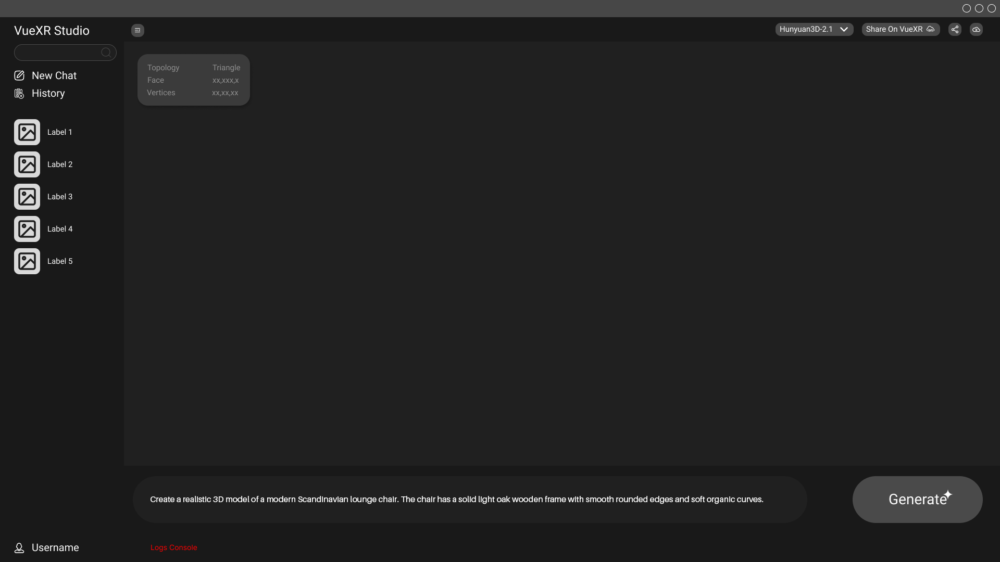

Prompt-to-3D with Local AI Models
Generate 3D meshes locally using modular AI backends through a unified runtime pipeline.
AI-Powered XR Content Creation
Built for enterprise teams, VueXR Studio turns ideas into publishable XR assets in one secure desktop workflow.
Generate 3D meshes locally using modular AI backends through a unified runtime pipeline.
Use one desktop workspace for prompt input, model selection, history, and live 3D preview.
Preview, publish to VueXR, or export GLB, FBX, and OBJ from the same secure workflow.
Deliver the same experience and output flow across desktop environments without cloud dependency.
See how VueXR Studio transforms a simple prompt into production-ready 3D assets with a fast local workflow from generation to final publishing.

Operate fully without internet and avoid recurring cloud inference cost.
Keep models and generation workflows under your control for privacy-sensitive use.
Designed for CUDA and Metal to deliver fast preview generation on modern laptops.
Export in GLB, FBX, and OBJ with optional compression and texture map support.
Validate geometry and visual quality in an interactive Unity runtime viewport.
XR studios, enterprise innovation teams, and technical creators who need secure, local-first 3D generation pipelines that move from concept to deployable assets quickly.
Traditional 3D content creation is slow, fragmented, and cloud-dependent. VueXR Studio unifies generation, inspection, and publishing in a single desktop app while preserving privacy and reducing operational cost.